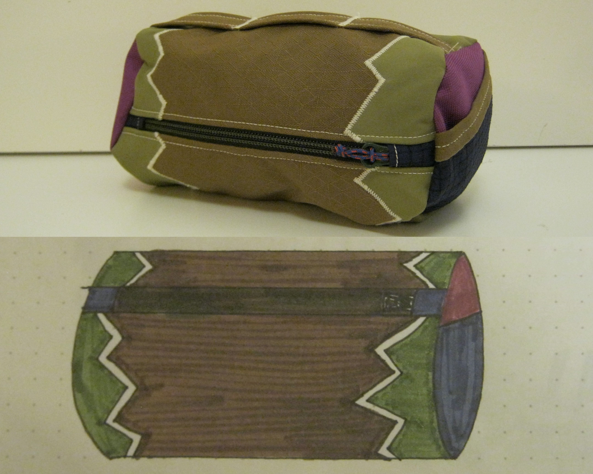
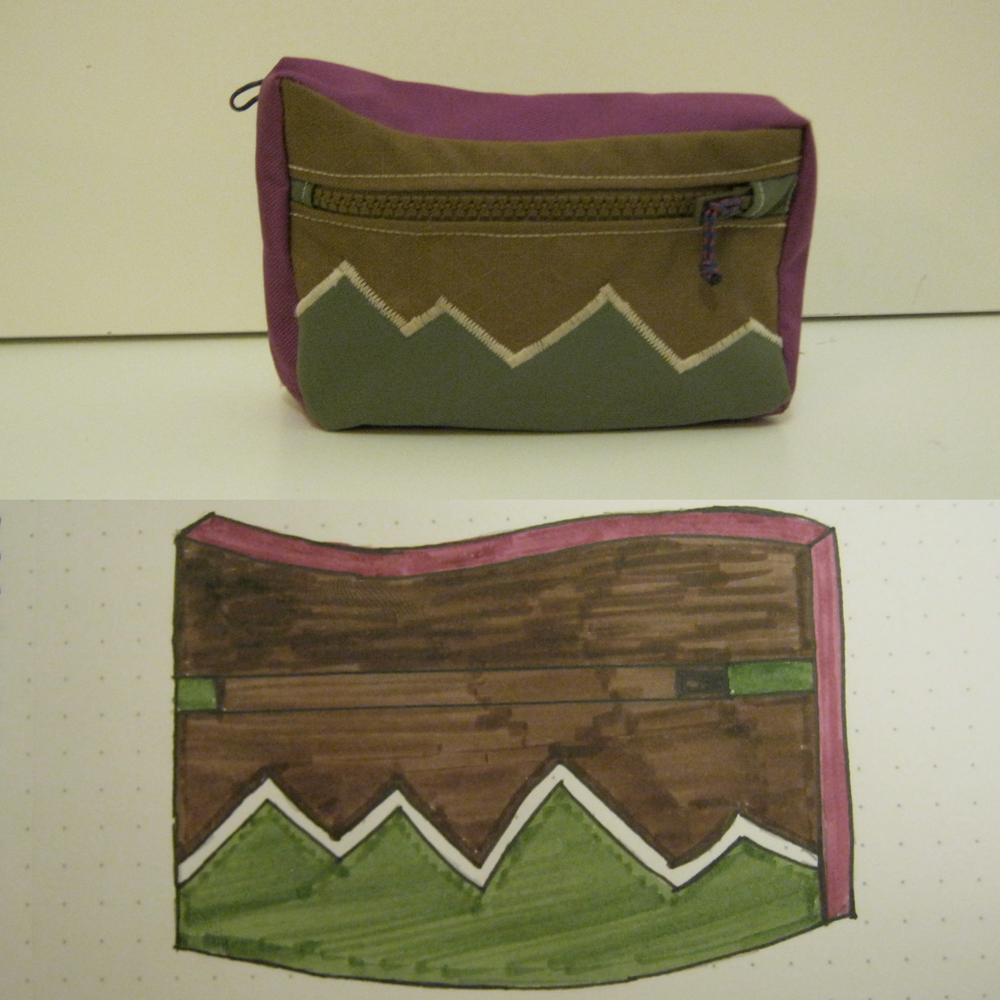
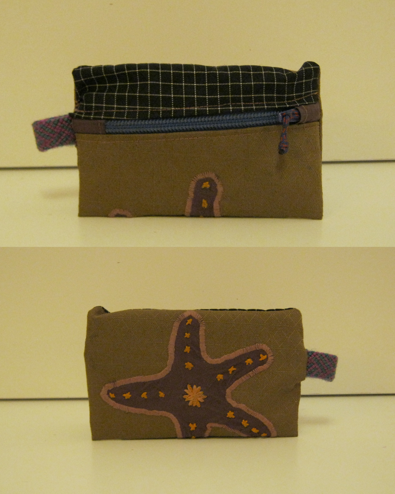

SEWING
THESE SEWN OBJECTS ARE BUILT TO BE BOTH USEFUL AND EXPRESSIVE. MADE PRIMARILY FROM RECYCLED MATERIALS, EACH PIECE IS DESIGNED AROUND THE LIMITS OF WHAT IT WILL BE USED WITH, TURNING THOSE CONSTRAINTS INTO PART OF THE DESIGN.

BIKE BAG
This bike burrito bag is built around practical use, material and shape experimentation, and layered construction.

HIP PACK
Designed to sit seamlessly on the hip belt of a backpacking pack, this hip pack is shaped to match the belt’s existing geometry for a secure fit.

WALLET
A small sewing project exploring embriodery, compact design, and everyday function.

PROCESS
Shaped to fill the main triangle of a bike frame, this bag turns unused space into storage while staying out of the rider’s way.